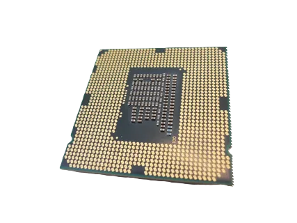
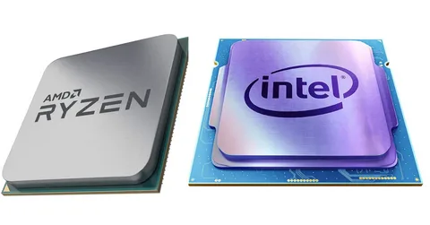

Процессор — Это основной вычислительный элемент и «мозг» компьютера, от которого во многом зависит скорость его работы и производительность. Раньше при сборке нового компьютера процессор выбирали первым, а уже потом остальные компоненты, чтобы технические характеристики оборудования совпали. В последнее время процессор чаще берут уже после материнской платы — с заделом на последующий апгрейд.

Сокет — Это разъем на материнской плате, в который устанавливается процессор. Сокет является важнейшей характеристикой компьютера, определяя список совместимых чипсетов, процессоров, материнских плат и систем охлаждения, которые можно установить на него. Сокеты отличаются числом контактов, которое обычно растет вместе с мощностью и сложностью процессоров.
L1 L2 L3
Кэш процессора - Это аппаратный кэш, используемый центральным процессором компьютера для снижения средних затрат времени или энергии на доступ к данным из основной памяти. Кэш-это меньшая и более быстрая память, расположенная ближе к ядру процессора, в которой хранятся копии данных из часто используемых ячеек основной памяти.

Amd/Intel - Главное различие между процессорами AMD и Intel заключается в том, что процессоры AMD отлично справляются с многозадачностью, имеют более низкую цену, тогда как процессоры Intel лучше справляются с однопоточными задачами, являются более высокопроизводительными, а также энергоэффективными процессорами.